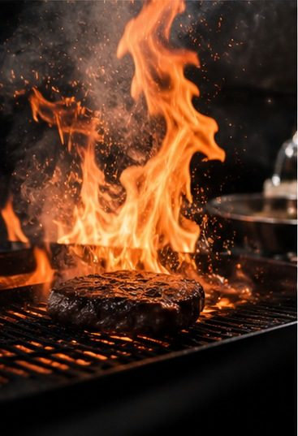

Generated concept image
Restaurant, Glasgow
Fire, salt and something good to share.
Cooked over coals and put in the middle of the table. Come with people you like.
The menu
Choose a course.
Tap or hover a course to see it. Arrow keys work too.


To start
Small plates to share while you decide what comes next.
Dish names, prices, allergens and opening hours come from the restaurant and are not shown on this concept.
Reserve
Book a table.
A demonstration. Nothing is booked, sent or saved, and no availability is shown.